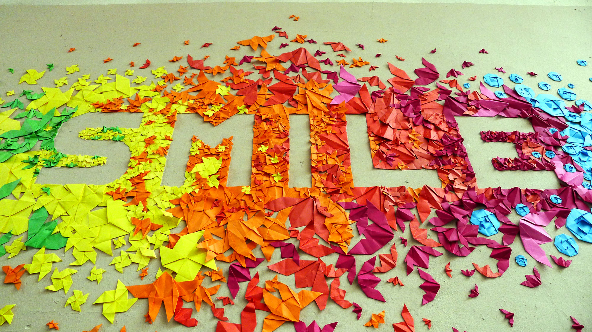

Laura Bourin
Blog / Blok?
Subtitle 1
Tijdens de eerste les Webdesign en desktoppublishing werd ons kort weergegeven wat er tijdens deze lessen zal gebeuren.
De eerst stap van de eerste les, was een twitter aanmaken(@laurabourin), tegen mijn principes. Eenmaal Twitter aangemaakt kregen we een korte uitleg hoe deze sociale media nuttig gebruiken. Voortaan ben ik een pro in twitteren, tweeten, retweeten,….
Voor meer informatie over mij, Laura Bourin kan je altijd terecht op mijn LinkedIn pagina, of op mijn online CV.